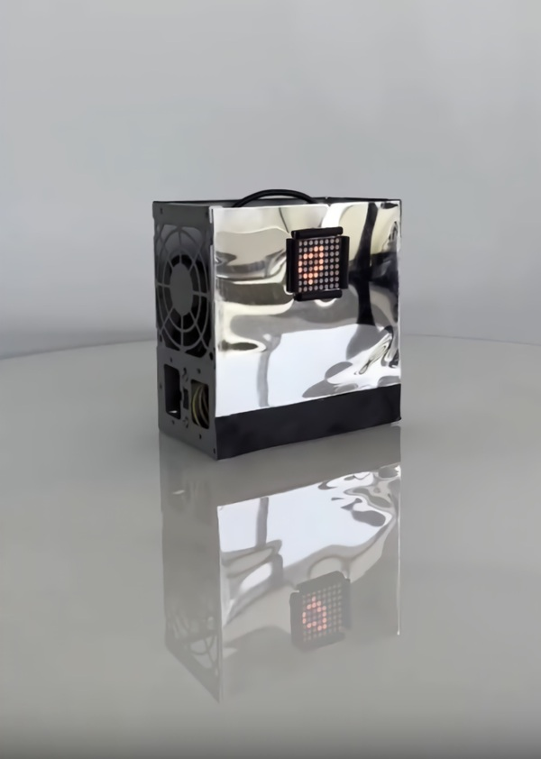

VLADISLAV GENERALOV
cellular automata minibox

A small device for visual demonstration of ‘cellular automata’ math algorithm with the use of 8x8x LED matrix.
The algorithm of the device is based on a variant of the cellular automaton "Game of Life", created in 1970 by a mathematician from the University of Cambridge, John Conway.